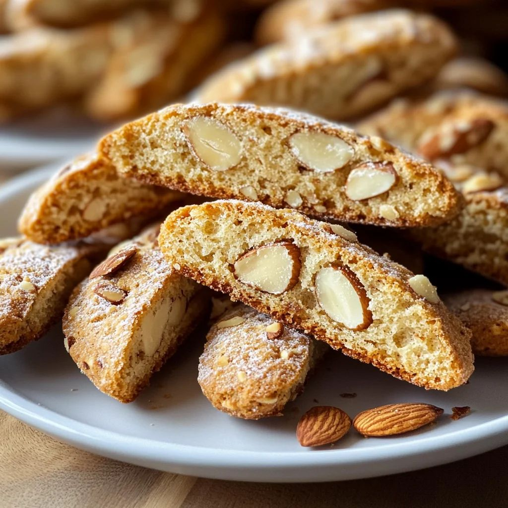
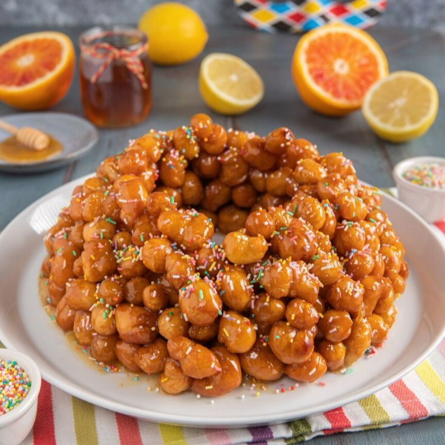

Ricette Dolci
In questa sezione troverai tutte le ricette dolci tipiche delle regioni italiane, adatte ad ogni occasione.

Toscana -I Cantucci-
Ingredienti:
-Uova (circa 2 medie) 100 g
-Zucchero 180 g
-Ammoniaca per dolci 0,5 g
-Farina 00 265 g
-Mandorle 110 g
-Marsala o altro vino liquoroso 10 g
-Scorza d'arancia 1
-Sale fino 1 pizzico
-Burro a temperatura ambiente (morbido) 30 g
Per spennellare:
-Tuorli 1
Preparazione:
Per preparare i cantucci, cominciate ponendo in una ciotola lo zucchero e unite le uova. Mescolate con una spatola: non c’è bisogno di sbattere, ma solo di sciogliere bene i cristalli. A parte, in un'altra ciotola, unite la farina e l'ammoniaca per dolci.
Aggiungete un pizzico di sale. Mescolate e unite gli ingredienti secchi al composto di uova e zucchero. Amalgamate e unite anche il burro morbido.
Impastate con le mani, aggiungete anche le mandorle, poi profumate con il marsala .
Unite la scorza grattugiata di mezza arancia non trattata. Impastate fino a far incorporare bene tutti gli ingredienti all’interno dell’impasto, quindi formate un panetto e trasferitelo sul piano da lavoro. Aiutandovi con un pizzico di farina dividete il panetto in due parti uguali.
Ricavate da ciascuna un filoncino lungo e piuttosto stretto (sarà circa largo 4 cm). Disponete i filoncini ben distanziati su una teglia ricoperta di carta forno (non c’è bisogno di appiattirli, avverrà naturalmente in cottura). Sbattete in una ciotola il tuorlo d'uovo.
Spennellate i vostri filoncini con il tuorlo d’uovo sbattuto (se il tuorlo risultasse troppo denso, potete stemperalo con un po’ d’acqua o panna). Cuocete i filoncini in forno statico preriscaldato a 200° per 20 minuti, quindi sfornateli e lasciateli intiepidire pochi minuti. Quindi, con un coltello, tagliate il filoncino leggermente in diagonale, creando dei cantucci di circa 1,5 cm di spessore.
Disponeteli nuovamente sulla teglia coperta di carta forno e rimetteteli in forno statico preriscaldato a 180° per 15 minuti circa. Sfornate i vostri cantucci e lasciateli raffreddare prima di gustarli…accompagnati da un bel bicchierino di vin santo!

Le Marche -La Cicerchiata-
Ingredienti:
-Farina 00 300 g
-Uova medie 3
-Olio extravergine d'oliva 20 g
-Liquore all'anice 10 g
-Scorza di limone 1
Per guarnire:
-Miele millefiori 500 g
-Mandorle pelate 70 g
-Codette colorate q.b.
Per friggere:
-Olio di semi di arachide q.b.
Per ungere lo stampo:
-Olio extravergine d'oliva q.b.
Preparazione:
Per preparare la cicerchiata versate le uova in una ciotola insieme al liquore, all’olio e alla scorza grattugiata del limone. Sbattete il tutto con una forchetta, poi aggiungete la farina. Amalgamate gli ingredienti nella ciotola prima con la forchetta e poi con le mani.
Trasferite il composto sul piano di lavoro e continuate a lavorare con le mani fino ad ottenere un impasto liscio e omogeneo, simile a quello della pasta fresca. Formate una palla e avvolgetela nella pellicola, poi lasciate riposare a temperatura ambiente per circa 15 minuti. Trascorso questo tempo dividete l’impasto in piccole porzioni.
Formate dei filoncini dello spessore di 1 cm, poi tagliateli a tocchetti della lunghezza sempre di 1 cm. Arrotondate i pezzettini di impasto con le dita per ottenere delle palline.
A questo punto portate l’olio di semi alla temperatura di 200° e friggete poche palline per volta. Quando saranno dorate in modo uniforme scolate e lasciate raffreddare su carta per fritti. Nel frattempo tagliate le mandorle a filetti. Versate il miele in una pentola capiente e scaldatelo dolcemente per qualche minuto.
Quando il miele avrà preso colore, spegnete il fuoco e aggiungete le palline fritte. Mescolate bene così da ricoprirle uniformemente, poi unite le mandorle e le codette, avendo cura di tenerne qualcuna da parte per la decorazione.
Mescolate ancora il tutto. Versate il composto all’interno di uno stampo da ciambella del diametro di 23 cm, unto con olio di oliva, livellate la base e lasciate raffreddare a temperatura ambiente.
Una volta che il composto si sarà raffreddato, capovolgete lo stampo sul piatto da portata; se dovesse staccarsi con difficoltà potete scaldare leggermente la superficie dello stampo con una fiamma. Guarnite con le mandorle e le codette tenute da parte e servite la vostra bellissima cicerchiata.